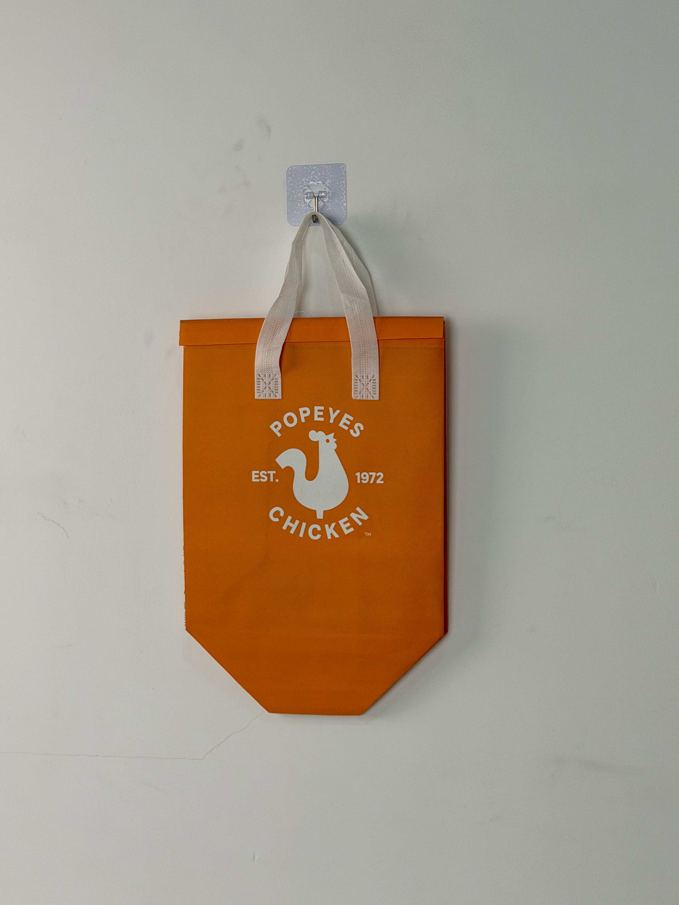

A vibrant orange thermal tote designed for Popeyes Louisiana Kitchen, combining heritage branding with a shield-shaped base engineered for stable fried-chicken box transport in high-volume delivery operations.

Popeyes Louisiana Kitchen is one of the world's largest quick-service chicken restaurant chains, with over 4,000 locations across 30+ countries. Founded in 1972 in New Orleans, the brand built its reputation on bold Louisiana flavors, hand-battered chicken, and a distinctive visual identity anchored by its iconic rooster logo. As delivery channels expanded to represent over 30% of system-wide sales, Popeyes needed thermal packaging that would preserve product crispiness and temperature while extending brand presence into customers' homes.
Our chicken travels from fryer to customer door in 20 minutes. The bag has to keep it hot and crispy — and look unmistakably Popeyes while doing it.
The project brief specified a bag capable of holding standard fried-chicken boxes and family meal combos while maintaining internal temperatures above 60°C for the critical last-mile window. Unlike generic food-delivery bags, the design needed to communicate Popeyes' heritage brand equity through color, logo scale, and material quality.
The design leverages Popeyes' most recognizable brand asset — the heritage chicken logo — rendered in clean white against the brand's signature orange. This high-contrast pairing ensures instant recognition whether the bag sits on a delivery rack, a car seat, or a kitchen counter. The shield-shaped base echoes the protective geometry of the logo itself, creating visual coherence between brand mark and product form.
Color-matched to Popeyes' corporate Pantone for consistency across uniforms, signage, and packaging.
Classic EST. 1972 rooster mark scaled for maximum visibility on the 30 x 35cm print field.
Angled bottom panels create a stable footprint that prevents tipping during vehicle transport.
5mm closed-cell foam maintains internal temperature above 60°C for 30+ minutes in ambient conditions.
The bag was engineered for the specific thermal and mechanical demands of fried-chicken delivery. Unlike pizza bags that prioritize horizontal loading, this vertical format accommodates stacked chicken boxes, side-item containers, and biscuit sleeves while maintaining even heat distribution through reflective aluminum lining.
| Parameter | Specification | Test Standard |
|---|---|---|
| Thermal Retention | > 60°C for 30 min (25°C ambient) | Internal Protocol |
| Load Capacity | 10 kg | ASTM D5265 |
| Grease Resistance | Grade 5 (Kit test) | TAPPI T559 |
| Print Abrasion | > 500 cycles | ASTM D5264 |
Quick-service restaurant rollouts demand batch consistency across hundreds of thousands of units. Production followed a six-stage workflow with inline quality gates to ensure every bag delivered to Popeyes' global network met the same thermal and aesthetic standards.
Pantone 021 C confirmed via physical swatch under D65 lighting. 100gsm non-woven PP produced with color-masterbatch extrusion for batch-to-batch consistency.
Automatic oval screen press with 77T mesh. White plastisol flash-cured at 180°C to prevent dye migration from the orange substrate.
Three-layer composite formed via hot-roll lamination: printed non-woven face / 5mm EPE foam / aluminum-PE barrier backing.
CAD-optimized nesting minimizes waste. Shield-shaped bottom panel cut with ultrasonic sealing to prevent edge fraying.
Double-needle stitching at 8 SPI. White woven handles attached with reinforced box-X pattern, pull-tested to 45N per attachment.
Random-sample thermal probe testing validates 30-minute retention. Flat-packed in moisture-barrier polyethylene-lined cartons.
The thermal tote was deployed across Popeyes' North American and Middle Eastern delivery networks, replacing generic third-party delivery bags with branded, thermally optimized carriers. The rollout coincided with the brand's viral chicken-sandwich launch period, placing enormous stress on delivery infrastructure.
Key Insight: During the chicken-sandwich surge, delivery drivers reported that the bag's vertical format and stable base allowed them to carry three stacked orders securely on motorcycle racks — a configuration impossible with conventional flat-bottomed bags.
The bag's visual impact extended beyond pure functionality. Social-media posts featuring the orange tote became common during the promotional period, with customers associating the bold color and heritage logo with the brand's cultural moment. The bag effectively transformed from delivery equipment into a shareable brand artifact.
Three structural decisions distinguish this delivery bag from standard QSR thermal carriers. Each addresses a specific operational challenge in fried-chicken last-mile delivery.
Fried-chicken boxes and family-meal containers have fundamentally different dimensions than pizza boxes. The vertical 30 x 35cm format allows natural stacking of chicken boxes, biscuit sleeves, and side containers without the compression damage common in horizontal bags.
Standard 3mm insulation allows too much heat loss for fried chicken, where maintaining temperature above 60°C is essential to preventing sogginess. The 5mm EPE foam extends the thermal window by 12 minutes — the difference between crispy and compromised.
The angled shield geometry creates a wider effective footprint than a simple square base of equivalent material usage. This stability is critical on motorcycle delivery racks and car seats where conventional bags rock and tip during transport.
We engineer hot-food delivery packaging for global quick-service brands. From foam density to base geometry, every specification is calibrated for your menu and delivery infrastructure.